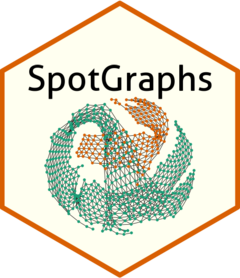

Remove all edges that lie between pairs of clusters
CutEdges.RdRemove all edges that lie between pairs of clusters
Examples
if (FALSE) { # \dontrun{
# Create a coordinate data frame
df = rbind(expand.grid(1:5, 1:5), expand.grid(9:11, 9:11))
colnames(df) = c('x', 'y')
# Create an igraph object with these coordinates
ig = SpotGraph(df)
# Perform clustering and add those cluster assignments to the igraph object
cl = igraph::cluster_louvain(ig)$membership
ig = igraph::set_vertex_attr(ig, 'cluster', value = factor(cl))
# Examine graph before removing edges
SpatialPlotGraph(ig, group.by = 'cluster')
# Remove edges between clusters 1 and 2, and between clusters 3 and 4
ig = CutEdges(igraph_object = ig,
cluster_pairs = list(c(1,2), c(1,3)),
cluster.col = 'cluster')
# Examine graph after removing edges
SpatialPlotGraph(ig, group.by = 'cluster')
} # }